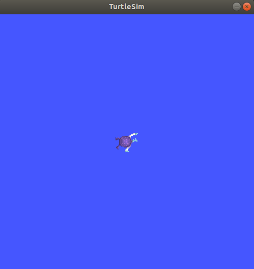
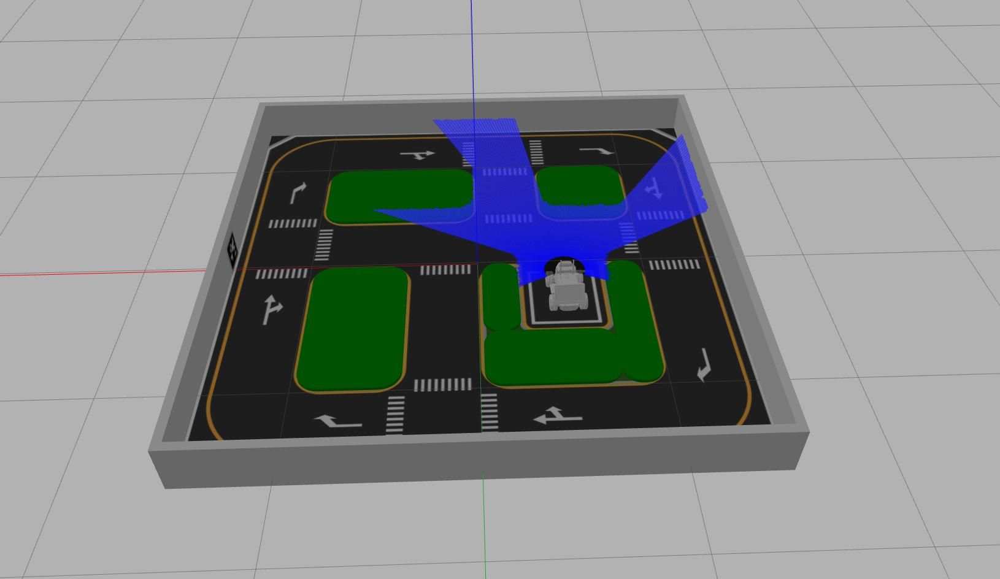

In Lecture 1 you installed Ubuntu 22.04, ROS 2 Humble Hawksbill, and the LIMO simulation packages, and you probably ran one command just to prove the install worked. Today we stop treating ROS 2 as a magic word typed into a terminal and start treating it as what it actually is: not a single program. There is no "ROS 2.exe" you double-click. ROS 2 is a collection of libraries and conventions that let many small, independent programs — called Nodes — find each other on a computer (or across a network of computers) and exchange data, without any of them needing to know the others' code, language, or even which machine they're running on.
This matters immediately for LIMO. A single LIMO robot, once fully running, has a Node reading the LiDAR, a Node reading the depth camera, a Node reading wheel encoders and the IMU, a Node turning velocity commands into motor signals, and — once you reach the navigation lectures later in the course — Nodes for mapping, localization, and path planning. None of these programs was written as one giant file. They are separate processes, often shipped by different teams, that agree on a common "language" for talking to each other. That common language is ROS 2.
ROS 2 (Robot Operating System 2) is middleware for robotics: a set of libraries and tools that let independent processes called Nodes discover one another and exchange Messages over a data distribution layer called DDS, without a central point of control.
If you've read anything about the original ROS ("ROS 1"), you may have heard of roscore — a single
master process that every Node had to register with, and which the whole system depended on. ROS 2 has
no master process. It is fully decentralized: Nodes discover each other directly over the
network using DDS discovery, so there's no single point of failure and no single program you must remember to
start first.
Picture a tiny slice of LIMO's software running in Gazebo: a Node that pretends to be the LiDAR publishes distance readings, a Node that decides "should I stop or keep going" listens to those readings, and a Node that pretends to be the motor driver receives the final velocity command. None of these three programs imports the others' source code. They only agree on two things: the name of the channel they're talking over, and the shape of the data on that channel. That agreement is the whole idea of a Topic and a Message, which we formalize in section 2.3. For now, just look at the shape of the graph:
Figure 2.1 — A minimal LIMO graph: three independent Nodes, connected only by two named Topics.
The graph in Figure 2.1 is a simplified version of what actually runs when you launch LIMO's differential-drive simulation later in this lecture. The real graph has more Nodes (Gazebo's physics plugin publishing simulated sensor data, robot_state_publisher broadcasting the robot's geometry, and so on) but the underlying pattern — small Nodes wired together by named Topics — is identical to the real hardware. Learn the pattern in simulation and it transfers directly to the physical robot.
By the end of today you should be able to answer, for any ROS 2 system you're handed:
A Node is a single running process that does one job. In a well-designed robot, a Node has one
clear responsibility: read a sensor, run an algorithm, or drive an actuator. When you type ros2 run
turtlesim turtlesim_node, you are starting exactly one Node — a single operating-system process that ROS 2
tooling can see, name, and introspect.
A Node is an independently executable ROS 2 process, identified by a unique name in the graph, that communicates with other Nodes through Topics, Services, Actions, and Parameters.
Let's stop reading about Nodes and look at a real one. Open a terminal — this course uses terminator so you can split one window into several panes instead of juggling separate terminal windows — and run:
A turtlesim window pops up with a turtle in the middle. That window is being driven entirely by one Node. In a second terminal pane, ask ROS 2 who is currently alive on the graph:
ros2 node info is one of the most useful commands you will run this entire course — it answers
exactly the four questions from section 2.1 for a single Node: what it subscribes to, what it publishes, and what
Services and Actions it offers.
turtlesim draws a cartoon turtle you can drive around with the keyboard. It looks childish — that's the point.
It has almost zero startup time, needs no Gazebo physics, and cannot break anything. Every command you learn on
the turtle today (node list, topic echo, service call, param
set) is the exact same command you will run against the real LIMO in section 2.8 and in every later
lecture. Get comfortable on the turtle before you touch the robot.
If ros2 node list prints nothing, the most common cause isn't a broken install — it's that the
Node was launched in a different terminal pane that you already closed, or your workspace's environment isn't
sourced in the current pane. Every new terminal pane needs source /opt/ros/humble/setup.bash (and
later, your workspace's install/setup.bash) before ROS 2 commands will find anything.
With turtlesim still running, open a third terminator pane and run ros2 node list again. Then close
the turtlesim window (or Ctrl+C the Node) and run it once more. What changes, and why does that prove there is
no central "master" keeping a permanent registry?
Nodes are useless in isolation — a Node that reads a LiDAR but tells no one is just wasted electricity. The most common way Nodes share data in ROS 2 is the Topic: a named, typed channel that any number of Nodes can publish onto and any number of Nodes can subscribe to.
A Topic is a named channel over which Nodes exchange Messages of one fixed type, using a publish/subscribe pattern. Publishing is asynchronous — a Publisher sends data without waiting for, or even knowing about, any Subscriber. The relationship is many-to-many and fully decoupled: Publishers and Subscribers can start, stop, and crash independently of each other.
Let's drive the turtle to see this live. In one pane, start the keyboard teleop Node:
Now the graph has two Nodes: /turtlesim and /teleop_turtle, and one Topic wiring them together. Confirm it from a third pane:
Click into the teleop pane and press an arrow key — you'll see /turtle1/pose keep streaming, now with
changing numbers, while ros2 topic hz reports roughly how many Messages per second are flowing. This
is exactly the pattern LIMO's real LiDAR uses on /scan, its wheel odometry uses on /odom,
and its IMU uses on /imu — a continuous, self-paced stream, with no one waiting for a reply.

rqt_graph gives you the same information as a live picture instead of text — worth running any time a graph feels confusing:
rqt_graphMessage types are just structured data — a table you fill in. Here are the ones you'll meet constantly once you're working with LIMO instead of a turtle:
| Message type | Carries | Seen on |
|---|---|---|
geometry_msgs/msg/Twist | Two vectors: linear (x, y, z m/s) and angular (x, y, z rad/s) | /cmd_vel |
sensor_msgs/msg/LaserScan | A header, an angle range/increment, and an array of range readings in meters | /scan |
sensor_msgs/msg/Image | A header, height/width, pixel encoding, and the raw pixel byte array | /limo_camera/image |
nav_msgs/msg/Odometry | An estimated pose (position + orientation) and a twist (current velocity), each with a covariance matrix | /odom |
sensor_msgs/msg/Imu | Orientation, angular velocity, and linear acceleration, each with a covariance matrix | /imu |
Notice that every Message above starts with, or effectively behaves like, a timestamped reading rather than a one-off command. That's the tell for "this should be a Topic": the data is naturally continuous, and no single Node needs to block and wait for an answer. Compare that with "save the map to disk" — that happens once, on request, and blocking until it's done is completely fine. That's the tell for a Service, which we cover next.
With teleop and turtlesim both still running, run ros2 topic echo /turtle1/cmd_vel in a fourth
pane, then press an arrow key in the teleop pane. What do you see appear, and why does it stop the instant you
release the key?
Not everything a robot does is a continuous stream. Sometimes you want to ask a Node one specific question and wait for one specific answer, then move on. ROS 2 has a dedicated pattern for that: the Service.
A Service is a synchronous, one-to-one request/response interaction. A Client sends a Request to a named Service and blocks until the Server sends back a Response. Unlike a Topic, a Service call happens once and then the exchange is over.
turtlesim's /turtlesim Node offers a Service called /clear, which wipes the trail the
turtle has drawn. Call it directly from the command line:
The trail behind the turtle disappears instantly. std_srvs/srv/Empty carries no data at all in either
direction — calling it is exactly like pressing a physical button. Other Services carry real fields; for example
/spawn takes an x, y, theta, and name and returns
the spawned turtle's name.
| Topic | Service | |
|---|---|---|
| Communication style | Publish/subscribe, asynchronous | Request/response, synchronous |
| Cardinality | Many publishers, many subscribers | One client talks to one server per call |
| Timing | Streaming, repeats continuously | One-shot, triggered on demand |
| Caller behavior | Never waits for a reply | Blocks until the response arrives |
| LIMO example | /scan, /odom, /imu | "clear costmap", "save current map" |
Beginners often try to use a Topic for something that should be a Service — for example, publishing a "save_map_now" message and hoping something handles it — with no way to know whether the save actually succeeded. If you need a definite answer back before your program continues, that's a Service, not a Topic.
Run ros2 service call /spawn turtlesim/srv/Spawn "{x: 2.0, y: 2.0, theta: 0.0, name: 'turtle2'}".
Then run ros2 node list again. Explain in two sentences why a new Node appeared, and why the Service
call returned before the new turtle finished being usable.
A Service is a poor fit the moment a task takes a long time. Imagine calling a Service named "drive_to_kitchen" — your program would sit frozen, blocked, for however many minutes it takes the robot to arrive, with zero visibility into whether it's stuck, half-way there, or already crashed into a shelf. ROS 2 has a third communication pattern purpose-built for exactly this situation: the Action.
An Action is a long-running, asynchronous task with three parts: a Goal sent by the Client, periodic Feedback streamed back while the task runs, and a final Result when it finishes. Unlike a Service, an in-progress Action Goal can be cancelled (preempted) at any time.
Figure 2.3 — The Action lifecycle: one Goal, several Feedback messages, one final Result.
Later in this course, once LIMO's Nav2 stack is running, you will send it a target pose and it will drive there
on its own, dodging obstacles along the way. That interaction is a real Action called
NavigateToPose. It is never implemented as a Service, because the drive can take minutes, the robot
needs to report live progress, and you must be able to cancel it (say, if a person walks in front of the robot).
Keep this in mind now — it will make far more sense the day you actually call it.
| Pattern | Duration | Feedback while running | Cancellable |
|---|---|---|---|
| Topic | Continuous stream | N/A — it is itself a stream | No |
| Service | Instant / short | None | No |
| Action | Seconds to minutes | Yes, periodically | Yes |
You are asked to add a "dock and recharge" behavior to LIMO, which can take up to two minutes and should be abortable if a human needs the robot immediately. Would you implement it as a Service or an Action? List one concrete problem you'd hit if you picked the wrong one.
Every Node can carry a set of named, typed settings called Parameters that change its behavior without touching or recompiling its code. This is how the same navigation software can drive a small warehouse robot and a large delivery robot just by changing numbers in a YAML file, not the source.
A Parameter is a named, typed value owned by a specific Node that configures its behavior and can be read or changed at runtime, either from the command line, a YAML file, or another Node.
turtlesim exposes its background color as three Parameters. Inspect and change them live:
The background instantly shifts to a different shade — no code change, no rebuild, no restart of the Node. This is
the same mechanism that, on the real LIMO, holds values like wheel radius, max linear/angular velocity limits, and
LiDAR frame IDs; changing a robot's tuning is a ros2 param set call or a line in a YAML file, not a
code edit.
A car's live speedometer reading changes every instant — that's a Topic. Setting cruise control to "keep it at 60 km/h" stays fixed until you change it again — that's a Parameter. Fast-changing sensor data goes on a Topic; relatively stable configuration goes in a Parameter.
Change all three of background_r, background_g, and background_b to make
the turtlesim canvas roughly purple, then run ros2 param get on each to confirm the new values
stuck.
Every Message type you've seen so far — Twist, LaserScan, Odometry — ships
with ROS 2 or a common interfaces package. But robots also need to report information that has no generic
equivalent. LIMO's onboard embedded controller reports its own internal state — battery voltage, which of the
four drive modules is attached, whether it's in an error state — and none of the stock message packages have a
field for "which of LIMO's four drive modes is currently active." So the LIMO driver package defines its own
custom message type: limo_msgs/msg/LimoStatus.
A custom message is a Message type defined by a package rather than borrowed from
std_msgs, geometry_msgs, or another common package, written as a plain-text
.msg file listing field types and names, which the ROS 2 build tools turn into real message code.
# limo_msgs/msg/LimoStatus.msg
std_msgs/Header header
uint8 vehicle_state
uint8 control_mode
float64 battery_voltage
uint16 error_code
uint8 motion_mode| Field | Type | Meaning |
|---|---|---|
header | std_msgs/Header | Timestamp and frame ID, like almost every ROS 2 sensor message |
vehicle_state | uint8 | Overall state of the vehicle (e.g. normal, low battery, estop) |
control_mode | uint8 | Whether the robot is being driven by remote control, command mode, or another source |
battery_voltage | float64 | Live battery voltage reported by the embedded controller |
error_code | uint16 | Bitmask/code reporting active fault conditions |
motion_mode | uint8 | Which of LIMO's drive modules is currently active: differential, Ackermann, Mecanum, or tracked |
LIMO is a "four-in-one" robot — the same chassis can carry a differential-drive, Ackermann-steer, Mecanum, or
tracked drive module, a topic we go deep on in Lecture 3. The embedded controller inside LIMO always knows
which module is physically attached and reports it through motion_mode in
LimoStatus. A navigation Node can read this field at startup to decide which kinematic model to
use, instead of you hardcoding it — the exact same "don't hardcode it, expose it" philosophy Parameters use,
applied to hardware state instead of configuration.
Once a LIMO driver is running (real hardware or, on some setups, a bridged simulation), inspect the type from the command line exactly like any other message:
ros2 interface show limo_msgs/msg/LimoStatus
Custom messages are how ROS 2 stays generic without being vague. The framework ships broadly useful types like
Twist and LaserScan so unrelated packages can interoperate, but any package is free to
define its own .msg files the moment its data doesn't fit an existing shape. You will write your
own custom messages later in this course once you start building LIMO-specific behaviors.
Time to leave the turtle behind. This course simulates LIMO in Gazebo 11 (the classic Gazebo,
driven through gazebo_ros and gazebo_plugins — not the newer gz-sim line) using the
limo_gazebosim package, which depends on limo_description and limo_msgs.
Launch LIMO's default differential-drive simulation:

The Gazebo window opens with LIMO sitting in a simulated world. Leave that terminal pane running the launch file, and open a fresh terminator pane for everything else. First, look at the graph LIMO just created:
This is the same shape of graph as the mini three-node LIMO example back in Figure 2.1, just fleshed out with the real Nodes Gazebo's plugins create. Drive the robot the "normal" way first, using teleop:
ros2 run teleop_twist_keyboard teleop_twist_keyboardClick into that pane and use the on-screen key legend to move LIMO around the Gazebo world, then Ctrl+C when you're done. Now drive it the "raw" way — publishing directly onto /cmd_vel without any teleop Node in between, exactly the verified command from the course's tested lab:
ros2 topic pub --once /cmd_vel geometry_msgs/msg/Twist "{linear: {x: 0.25}, angular: {z: 0.5}}"--once
Without --once, ros2 topic pub keeps publishing that same Twist message repeatedly,
forever, at a default rate — LIMO will keep driving even after you think you've stopped it. If your simulated
(or real!) robot won't stop moving, check for a runaway ros2 topic pub still running in a
forgotten terminal pane and Ctrl+C it.
Finally, peek at the LiDAR stream briefly — this is a firehose of numbers, so echo it for a moment and then Ctrl+C:
ros2 topic echo /scanheader:
stamp: {sec: 1892, nanosec: 430000000}
frame_id: limo/laser_link
angle_min: -3.1241390705108643
angle_max: 3.1241390705108643
angle_increment: 0.005817705299
range_min: 0.15000000596046
range_max: 12.0
ranges: [1.842, 1.839, 1.847, ..., inf, inf, 2.910]
---
Every command you just ran works completely unchanged against the physical LIMO once you switch from a Gazebo
launch file to the real hardware driver's launch file, later in the course. /cmd_vel,
/scan, /odom, and /imu keep the same names and types either way — this is
exactly why simulation-first development works.
With limo_gazebo_diff.launch.py running, run ros2 topic hz /odom and
ros2 topic hz /scan one after another. Which publishes faster? Given what each sensor is used for,
does that difference make sense?
We said in section 2.1 that ROS 2 has no master process, and that Nodes just "find" each other. The mechanism underneath that is DDS (Data Distribution Service), an industry-standard middleware that ROS 2 is built on top of. Every Node periodically announces itself on the local network segment; other Nodes listening for that announcement automatically learn its Topics, Services, and types, and connect directly to it, peer-to-peer, with no broker or master process sitting in between.
DDS (Data Distribution Service) is the publish/subscribe middleware standard that ROS 2 uses under the hood for Node discovery and data transport. ROS 2 talks to DDS through a swappable adapter layer called an RMW (ROS Middleware) implementation — you can change which DDS vendor ROS 2 uses without changing any of your own code.
DDS discovery works over the local network by default. In a classroom where fifteen students are all running
turtlesim (or LIMO in Gazebo) on the same Wi-Fi, you can end up seeing — and accidentally controlling — a
classmate's turtle. The fix is one environment variable, added to ~/.bashrc so it applies to every
new terminal:
# add to ~/.bashrc
export ROS_LOCALHOST_ONLY=1
With ROS_LOCALHOST_ONLY=1 set, DDS discovery and traffic are restricted to your own machine, so your
Nodes only ever see your own Nodes. Some course setups also prefer swapping the default RMW implementation for
rmw_cyclonedds_cpp, another common DDS vendor, which can behave more predictably on flaky classroom
Wi-Fi:
# add to ~/.bashrc
export RMW_IMPLEMENTATION=rmw_cyclonedds_cppThe fact that "which DDS vendor" is a one-line environment variable, not a code change, is a direct payoff of ROS 2's layered design: your Nodes are written against the ROS 2 client library API, which talks to an RMW interface, which talks to whichever DDS implementation is installed. Swap the bottom layer, keep every line of your Python or C++ untouched.
Today you replaced "type commands and hope" with a real mental model of ROS 2: a decentralized graph of Nodes that exchange data over Topics, request answers over Services, run long tasks over Actions, and expose their tuning knobs as Parameters — all discovered automatically over DDS, with no master process. You proved every one of those ideas twice: once cheaply on turtlesim, and once for real by launching AgileX LIMO inside Gazebo, inspecting its live graph, and driving it two different ways from the command line.
roscore.ros2 node info.ros2 param get/set.limo_gazebosim limo_gazebo_diff.launch.py and saw LIMO's real graph.teleop_twist_keyboard and with a raw ros2 topic pub --once command.ROS_LOCALHOST_ONLY=1 does and why a classroom needs it.
Connection to the course Everything from here forward assumes today's vocabulary
without re-explaining it. Lecture 3 opens LIMO's chassis conceptually and covers its four drive modules
(differential, Ackermann, Mecanum, tracked) — you'll recognize the motion_mode field from
LimoStatus the moment it comes back up. Later navigation lectures will hand you the
NavigateToPose Action you were only introduced to today, and you'll already know why it isn't a
Service.
--once on ros2 topic pub, leaving a runaway publisher driving the robot forever.msg namespace, as in geometry_msgs/Twist instead of geometry_msgs/msg/Twist) and getting a cryptic "unknown type" error.source install/setup.bash) before running ros2 launch limo_gazebosim ..., so ROS 2 reports it cannot find the package.